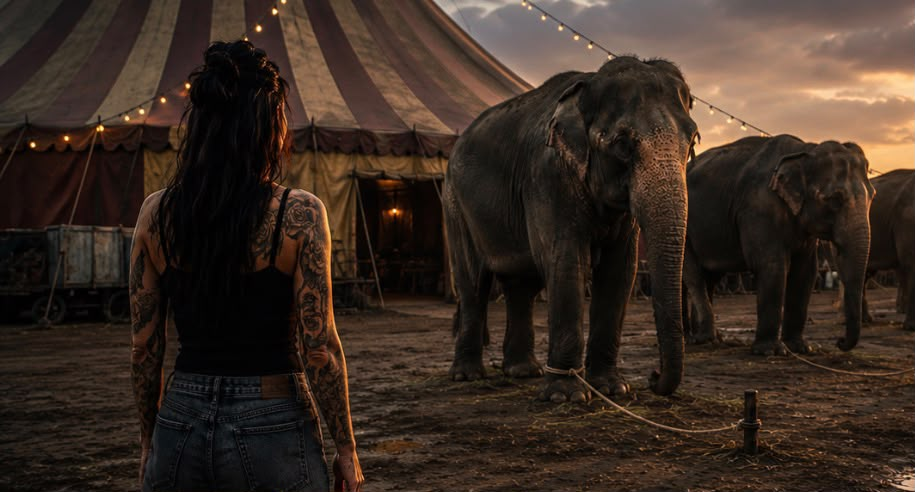

«Det hjelper ikke, man kommer seg aldri ut av det, uansett hvor mye man prøver.»
«En gang avhengig, alltid avhengig.»
«Det er ikke noe man kan kontrollere.»
«Det er bare en liten prosentandel som kommer seg ut.»
Alle de setningene har jeg hørt fra mennesker i aktiv rus, og jeg har tenkt dem selv.
Jeg er ikke lenger enig i de tankene.
Første gang jeg ville slutte, fikk jeg høre at bare 2 % lyktes. Det tallet gjorde at jeg nesten ga opp før jeg i det hele tatt prøvde.
Så la oss se litt på de tallene.
Ved første seriøse forsøk er det faktisk så mange som 30 % som lykkes.
Med tanke på at avhengighet er en kronisk, tilbakevendende lidelse, der tilbakefall er en dokumentert del av tilfriskningsprosessen, så er ikke 1 av 3 så dårlige odds på første forsøk.
Forskning viser at en person i snitt går gjennom 2 til 5 seriøse forsøk før de lykkes.
Det er nettopp fordi mange prøver igjen etter et tilbakefall, at den totale andelen som til slutt kommer seg ut av avhengigheten er oppe i nesten 70 %.
Og det synes jeg er oppmuntrende.
Det er langt fra 2 til 70 prosent.
Det er millioner av mennesker som har klart det –
og som fortsatt velger edringen sin hver eneste dag.
Så hvorfor skulle ikke du?
Jeg vet at man kan komme seg ut av det.
Jeg vet at man kan tryne
– men jeg vet også at man kan reise seg igjen.
Og jeg er overbevist om at nøkkelen til å komme seg ut av det ligger i en selv.
Hvis en finner troen, håpet og viljen til å fortsette – også etter motgang – og er villig til å gjøre jobben hver eneste dag, så tror jeg sjansen for å lykkes blir mye større.
Ja, har man et avhengighetssyndrom, så har man alltid det.
Men det er ikke det samme som at man alltid vil leve i avhengigheten.
Nei, man kan ikke kontrollere inntaket når man har en avhengighet.
Det er nettopp derfor man må passe på det eneste man faktisk kan styre
– den første drinken.
Og man må ta jobben seriøst.
Man må forstå at dette er en jobb.
At dette ikke bare handler om å slutte drikke.
Det handler om å tørre å møte den delen av seg selv som man prøvde å drukne i rusen.
Man må være et skritt foran.
Man må være villig til å investere like mye tid og energi i sin egen edring som man en gang investerte i rusen.
Man må være villig til å møte seg selv med ansvar og egenkjærlighet.
Man må tørre gå på møter, tørre utfordre egne tanker, tørre ta kampen for et bedre liv.
Man må tørre møte seg selv.
Bli kjent med seg selv.
Jeg har skrevet mye om hjernen – om det fysiske som skjer.
Nå vil jeg skrive litt om det mentale.
Det mennesket du hører mest gjennom livet
er deg selv.
De negative ordene og tankene du har om deg selv,
kan du endre.
Ja, det krever.
Vekst vil alltid kreve noe av oss.
Det vil alltid kreve noe å komme seg fremover.
Men står man stille, kommer man heller ingen vei.
Og jeg tror at mye av det som stopper oss, er nettopp oss selv.
Har du hørt om elefantsyndromet – metaforen om den bundne elefanten?
Det var en gang en mann som gikk forbi en sirkusleir.
På utsiden sto elefantene på rekke og rad.
Mannen stoppet opp, fascinert av de enorme skapningene.
De veide flere tonn, hadde muskler som kunne velte lastebiler og bar på en enorm urkraft.
Men da han så nærmere etter, la han merke til noe merkelig.
De gigantiske dyrene var verken innelåst i solide jernbur eller festet med tunge kjettinger.
Det eneste som holdt hver enkelt elefant på plass, var et tynt, slitt tau bundet rundt det ene forbenet, festet til en liten trepinne slått ned i bakken.
Mannen klødde seg i hodet.
Det var åpenbart at elefantene når som helst kunne slite i stykker det tynne tauet, trekke opp pinnen og marsjere fritt av gårde.
Men av en eller annen grunn gjorde de det ikke. De bare sto der.
Like i nærheten sto det en sirkustrener.
Mannen gikk bort til ham og spurte:
«Unnskyld meg, men hvorfor står disse enorme dyrene bare der? De prøver jo ikke engang å rømme?»
Treneren smilte og svarte:
«Jo, skjønner du, hemmeligheten ligger i fortiden deres. Når de er veldig små elefantbabyer, bruker vi akkurat det samme tauet og binder dem til den samme pinnen. For en liten elefant er dette tauet mer enn sterkt nok.
Når babyen blir bundet, prøver den selvfølgelig å slippe unna. Den drar, sliter, kjemper og gråter i dager og uker. Men den har ikke kreftene som skal til. Til slutt, etter hundrevis av mislykkede forsøk, gir den lille elefanten opp. Den aksepterer at tauet er sterkere enn den selv.
Når elefanten vokser opp og blir en kjempe på fem tonn, tror den fortsatt at tauet har makten.
Den har låst fast en sannhet i hodet sitt om at den er sjanseløs.
Fordi den er overbevist om at den ikke kan unnslippe, prøver den aldri.
Den er ikke fanget av tauet – den er fanget av sitt eget minne.
Fanget i sitt eget sinn.»
Akkurat sånn tror jeg det er med oss også.
Kanskje er det ikke bare avhengigheten alene som holder oss fast?
Kanskje er det alle gangene vi prøvde, men ikke klarte å bryte oss løs?
Kanskje er det stemmen som sier at «du klarer det ikke» som får for stor plass?
Kanskje vi er låst fast i en sannhet som kun sitter i vårt eget hode?
Jeg tror det.
Jeg tror at vi må slutte å la oss lure av oss selv.
Vi sitter ikke fast.
Avhengigheten er ikke sterkere enn oss selv.
Den sterkeste stemmen vi møter er vår egen.
Det er først når vi tør å utfordre den stemmen
at vi kan begynne å bryte oss fri.
